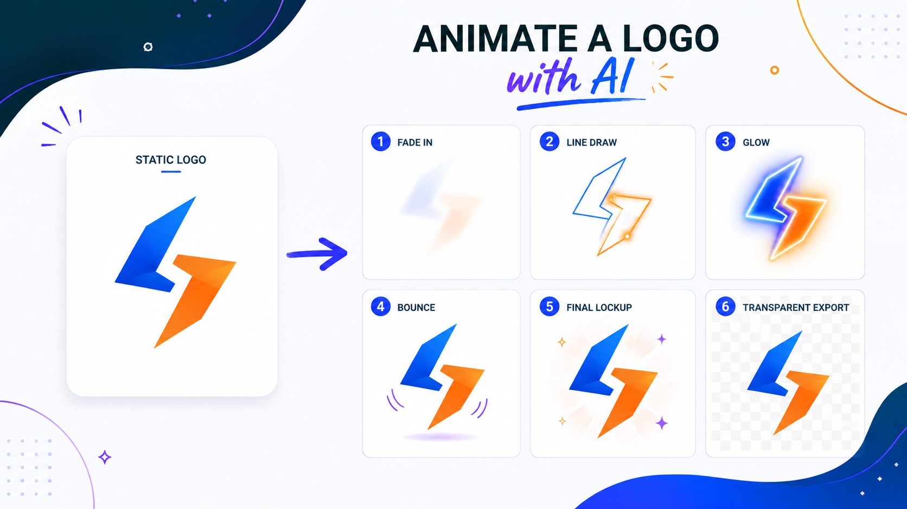

Промтзилла
Логотип в анимации должен остаться узнаваемым: нейросеть можно просить двигать свет, контур и фон, но не менять сам знак.

Пошаговая инструкция
- 1Подготовь логотип в хорошем качестве, лучше PNG или SVG.
- 2Опиши длительность: 3-5 секунд для заставки обычно достаточно.
- 3Укажи, какие элементы можно анимировать: контур, свет, частицы, масштаб.
- 4Отдельно запрети менять форму, цвета и пропорции знака.
- 5Попроси финальный кадр с логотипом в центре и прозрачный фон, если это нужно для монтажа.
Какой результат просить
Хороший результат выглядит как короткая заставка: логотип появился, сделал одно аккуратное движение и зафиксировался. Для старта можно использовать Study24 AI: добавь исходник, цель и ограничения, а затем попроси вариант для публикации.
Промт
RU
Оживи этот логотип для короткой заставки. Требования: — длительность 3-5 секунд; — сохрани форму, цвета, пропорции и читаемость логотипа; — не добавляй новые буквы и не меняй знак; — сделай аккуратное появление: контур, лёгкое свечение, движение или частицы; — финальный кадр должен быть статичным и чистым; — если возможно, подготовь вариант на прозрачном фоне. После результата опиши анимацию по секундам, чтобы её можно было повторить в видеоредакторе.
EN
Animate this logo for a short intro. Requirements: — duration 3-5 seconds; — preserve the logo shape, colors, proportions, and readability; — do not add new letters or change the mark; — create a clean reveal: outline, soft glow, motion, or particles; — the final frame must be static and clean; — if possible, prepare a transparent background version. After the result, describe the animation second by second so it can be recreated in a video editor.
Важно
Если логотип зарегистрирован, не разрешай нейросети менять знак: даже небольшие искажения могут испортить фирменный стиль.
Теги